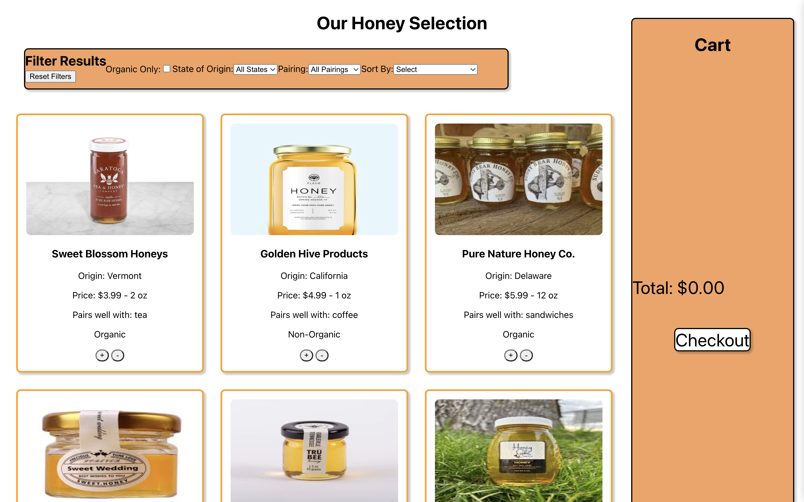

The Problem
I am an amateur beekeeper. That is not a problem, its just the reason I know there is a problem. Currently, the honey market is dominated by a few major producers. This has led to most Americans having Californian honey. However, buying honey from smaller producers can have many positive effects.
First,it helps keep bee populations high across the US.
Second,it is better for the bees as typical large producers place their bees to pollonate monocrop farms.
Third,a variety of pollon sources leads to a unique tasting product which results in many ideal food/honey pairings.
Fourth, eating honey local to you can reduce your allergic reactions.
Thus, I set out to research competitors and create a dynamic, marketplace focused on connecting small beekeepers with a large audience. The specific purpose of this website is to complete a market analysis to reveal a marketable niche within the honey market. After this, I want to develop a demo website which could be used to help validate that there is a consumer interest.
The Compititon
In order to build the best product, I needed to understand the current market. In other words, I needed to look at the other ways people could find honey regionally.
For my competitive analysis, I first wrote down the five main factors that I will be judging competitors by.
- Intuitive
- Regional Breakdown
- Highlights Small Producers
- Educates Users
- Helpful Reviews/Comments
For this first round, I specically focused on generating new ways to interact with the existing technology.
The three websites I chose to complete our competitve comparison chart with are 1. Amazon, 2. Honey.com, and 3. Local Honey Finder.
These websites were highlighted because of the significant role they each play within the honey market. Amazon is the largest online seller of honey, while Honey.com and Local Honey Finder are smaller providers with a similar aim to my own store.
Comparison Chart
| Feature | Amazon | Honey.com | Local Honey Finder |
|---|---|---|---|
| Reviews | ✅ | ❌ | ❌ |
| Intuitive Design | ✅ | ❌ | ❌ |
| Regional Breakdown | ❌ | ✅ | ✅ |
| Highlights Small Producers | ❌ | ✅ | ✅ |
| Educates Users | ❌ | ✅ | ❌ |
This analysis shows the niche that my marketplace could hold. No current method is perfect. They either are convoluted / too geographically oriented. On the other hand, they are standard shopping methods not modified to take in consideration of honey’s nuances.
Amazon's most effective factors are its intuitive design and filtering system. However, it doesn't allow you to easily break down results by geographic origin. They do have a clear heirarchy and design cohesion. They list products as "local honey," but it is unclear where they are local too.
Honey.com's most effective factors are its map. Yet, there are now ways of easily buying the products on the website. It only redirects you. There is a map like interface which doesn't seem entirely cohesive to the shopping experience.
Local Honey Finder has similar problems. It also is laking education materials on the nuances of honey's pairings and details. It's work flow is also unclear and will likely lead to a poor user experience.
Starting to Redesign
Using this information, let's design the key features needed for this website:
- A way of educating the user about each type of honey.
- The ability to filter the honeys by pairings.
- The ability to regionally organize the honeys.
- The ability to sort by both price and ounce.
- Understandable UI/UX that matches standard shopping behavior.
With these features, my target customer is revealed to be someone newly interested in food pairings, enviromentally concious, and with some disposable income. I believe that the ability to sort by quantity is distinctly relevant to this user because they are likely only going to want a small amount the first time they a product.
Propogating the Product
For this product, the most important feature was the Honey Card. My design of the took inspiration from Amazon's minimalist system and Honey.com's educational resources. In particular, I wanted the card to have both an image of the product, but also details on the honey's nuances and pairings.
My primary colors were chosen to support the minimalist, clean design. In the end, I went with a white, black, and two shades of orange.
After doing the sketch of the card in figma (left), I implemented it in HTML and CSS (right):
Selling the Honey
Using a similar process, I went through the remaining website features until I had reached this design.
Here, the main features of the website are the filtering and sorting components.
These allow the user to educate themselves on various elements that they otherwise would have likely ignored.
Please check out the fully interactable version here